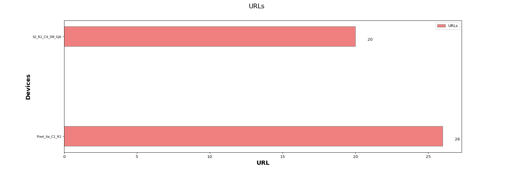
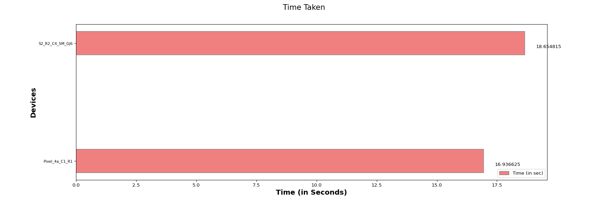

The Candela Web browser test is designed to measure the Access Point performance and stability by browsing multiple websites in real clients like android, Linux, windowsand IOS which are connected to the access point. This test allows the user to choose the options like website link,the number of times the page has to browse, and the Time taken to browse the page.The expected behavior is for the AP to be able to handle several stations(within the limitations of the AP specs) and make sure all clients can browse the page.
| Test Parameters |
|
||||||||||||||||||||


| Device Type | Hostname | SSID | MAC | Channel | UC-MIN (ms) | UC-MAX (ms) | UC-AVG (ms) | Total Successful URLs | Total Erros | RSSI | Link Speed |
|---|---|---|---|---|---|---|---|---|---|---|---|
| Android | Pixel_4a_C1_R1 | xiab_2G_WPA2 | 02:00:00:00:00:00 | 6 | 1.185 | 8.762 | 4.439538 | 26 | 0 | -26 | 43 Mbps |
| Android | S2_R2_C4_SM_GJ6 | xiab_2G_WPA2 | fe:80:53:eb:57:18 | 6 | 2.234 | 16.519 | 8.784526 | 20 | 0 | -26 | 52 Mbps |